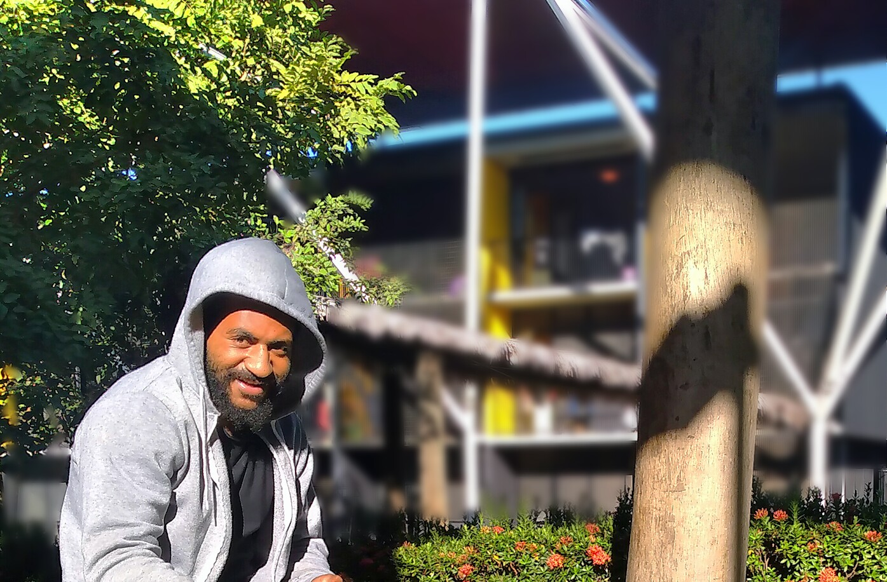

This web site gives littele background information about my life story. However, not everything here is in detail.
I attended my Elementary School in a small vilalge called Lyupomanda in the Kompiam Ambum District of Enga Province, and this is where I come from. The Primary School I went to is also in the same village, Lakuia, starting from the fifth grade to my eighth grade where life was simple and enjoyable. However, after the completion of my eight grade and when going out to Lower Secondary School level, no one cared about my education life because I've got no more family members to look after me and pay for my school fees, even though I had my grand parents they were unable to look for money. On the other hand, little they had was a huge blessing for my as I can now feel the importance of it. After there, I was selected to go to NATIONA SCHOOL of EXCELLENCE-PASSAM, and there I completed my years eleventh and tweveth (2020-2021), and was selected to UPNG for Science Foundation Year in 2022 and this year (2023) is my second year of studying (taking Computer Science).The Lesson I learnt was the "Life teaches people about how to manage and appreciate little that we have", and in it there,s always a blessing only if we know the meaning of what struggle is.
2022 Image taken @ UPNG: 
My Education History is shown in the table below:
| School | Certificate | Year |
|---|---|---|
| Lakuia Primary School | Grade 8 | 2017 |
| Anditale Hign School | Grade 10 | 2019 |
| NSoE-Passam | Grade 12 | 2021 |
| UPNG | Science Foundation Year | 2022 |
In afct I come from a family, not a poor but, no body even cared abount what my future carrier wound be after some 10 to 20 years. However, so far I've made it through the help of others coz HE has been so good to me!